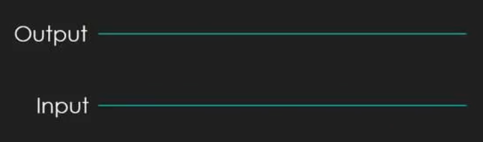
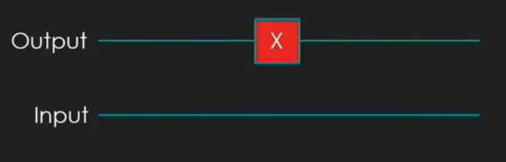
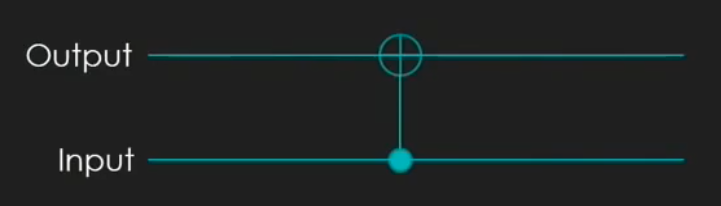
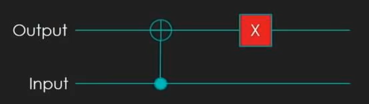

| ❘00❭ \(\begin{pmatrix}1 \\\ 0 \\\ 0 \\\ 0\end{pmatrix}\) | ❘01❭ \(\begin{pmatrix}0 \\\ 1 \\\ 0 \\\ 0 \end{pmatrix}\) |
| ❘10❭ \(\begin{pmatrix}0 \\\ 0 \\\ 1 \\\ 0 \end{pmatrix}\) | ❘11❭ \(\begin{pmatrix}0 \\\ 0 \\\ 0 \\\ 1 \end{pmatrix}\) |
| Identita: \(f(x) = x\) | \(\begin{pmatrix}1 & 0 \\\ 0 & 1\end{pmatrix}\times\begin{pmatrix}1 \\\ 0\end{pmatrix} = \begin{pmatrix}1 \\\ 0\end{pmatrix}\) | \(\begin{pmatrix}1 & 0 \\\ 0 & 1\end{pmatrix}\times\begin{pmatrix}0 \\\ 1\end{pmatrix} = \begin{pmatrix}0 \\\ 1\end{pmatrix}\) |
| Negace: \(f(x) = \lnot x\) | \(\begin{pmatrix}0 & 1 \\\ 1 & 0\end{pmatrix}\times\begin{pmatrix}1 \\\ 0\end{pmatrix} = \begin{pmatrix}0 \\\ 1\end{pmatrix}\) | \(\begin{pmatrix}0 & 1 \\\ 1 & 0\end{pmatrix}\times\begin{pmatrix}0 \\\ 1\end{pmatrix} = \begin{pmatrix}1 \\\ 0\end{pmatrix}\) |
| C0: \(f(x) = 0\) | \(\begin{pmatrix}1 & 1 \\\ 0 & 0\end{pmatrix}\times\begin{pmatrix}1 \\\ 0\end{pmatrix} = \begin{pmatrix}1 \\\ 0\end{pmatrix}\) | \(\begin{pmatrix}1 & 1 \\\ 0 & 0\end{pmatrix}\times\begin{pmatrix}0 \\\ 1\end{pmatrix} = \begin{pmatrix}1 \\\ 0\end{pmatrix}\) |
| C1: \(f(x) = 1\) | \(\begin{pmatrix}0 & 0 \\\ 1 & 1\end{pmatrix}\times\begin{pmatrix}1 \\\ 0\end{pmatrix} = \begin{pmatrix}0 \\\ 1\end{pmatrix}\) | \(\begin{pmatrix}0 & 0 \\\ 1 & 1\end{pmatrix}\times\begin{pmatrix}0 \\\ 1\end{pmatrix} = \begin{pmatrix}0 \\\ 1\end{pmatrix}\) |
| AND: \(f(x, y) = x \land y\) | \(\begin{pmatrix}1 & 1 & 1 & 0 \\\ 0 & 0 & 0 & 1\end{pmatrix}\times\begin{pmatrix}0 \\\ 1 \\\ 0 \\\ 0 \end{pmatrix} = \begin{pmatrix}1 \\\ 0\end{pmatrix}\) | \(\begin{pmatrix}1 & 1 & 1 & 0 \\\ 0 & 0 & 0 & 1\end{pmatrix}\times\begin{pmatrix}0 \\\ 0 \\\ 0 \\\ 1 \end{pmatrix} = \begin{pmatrix}0 \\\ 1\end{pmatrix}\) |
| CNOT: \(f(x,y) = (x \cdot \lnot y) + (\lnot x \cdot y)\) | \(\begin{pmatrix}1 & 0 & 0 & 0 \\\ 0 & 1 & 0 & 0 \\\ 0 & 0 & 0 & 1 \\\ 0 & 0 & 1 & 0\end{pmatrix}\times\begin{pmatrix}0 \\\ 1 \\\ 0 \\\ 0\end{pmatrix} = \begin{pmatrix}0 \\\ 1 \\\ 0 \\\ 0\end{pmatrix}\) | \(\begin{pmatrix}1 & 0 & 0 & 0 \\\ 0 & 1 & 0 & 0 \\\ 0 & 0 & 0 & 1 \\\ 0 & 0 & 1 & 0\end{pmatrix}\times\begin{pmatrix}0 \\\ 0 \\\ 1 \\\ 0\end{pmatrix} = \begin{pmatrix}0 \\\ 0 \\\ 0 \\\ 1\end{pmatrix}\) |
| Bit flip: | \(\begin{pmatrix}0 & 1 \\\ 1 & 0\end{pmatrix}\times\begin{pmatrix}a \\\ b\end{pmatrix} = \begin{pmatrix}b \\\ a\end{pmatrix}\) |
| \(\begin{pmatrix}\frac{\sqrt{2}}{2} & \frac{\sqrt{2}}{2} \\\ \frac{\sqrt{2}}{2} & -\frac{\sqrt{2}}{2}\end{pmatrix}\times\begin{pmatrix}1 \\\ 0\end{pmatrix} = \begin{pmatrix}\frac{\sqrt{2}}{2} \\\ \frac{\sqrt{2}}{2}\end{pmatrix}\) | \(\begin{pmatrix}\frac{\sqrt{2}}{2} & \frac{\sqrt{2}}{2} \\\ \frac{\sqrt{2}}{2} & -\frac{\sqrt{2}}{2}\end{pmatrix}\times\begin{pmatrix}0 \\\ 1\end{pmatrix} = \begin{pmatrix}\frac{\sqrt{2}}{2} \\\ -\frac{\sqrt{2}}{2}\end{pmatrix}\) |
| \(\begin{pmatrix}\frac{\sqrt{2}}{2} & \frac{\sqrt{2}}{2} \\\ \frac{\sqrt{2}}{2} & -\frac{\sqrt{2}}{2}\end{pmatrix}\times\begin{pmatrix}\frac{\sqrt{2}}{2} \\\ \frac{\sqrt{2}}{2}\end{pmatrix} = \begin{pmatrix}1 \\\ 0\end{pmatrix}\) | \(\begin{pmatrix}\frac{\sqrt{2}}{2} & \frac{\sqrt{2}}{2} \\\ \frac{\sqrt{2}}{2} & -\frac{\sqrt{2}}{2}\end{pmatrix}\times\begin{pmatrix}\frac{\sqrt{2}}{2} \\\ -\frac{\sqrt{2}}{2}\end{pmatrix} = \begin{pmatrix}0 \\\ 1\end{pmatrix}\) |
| C0 | C1 |
|  |  |
| Identita | Negace |
|  |  |